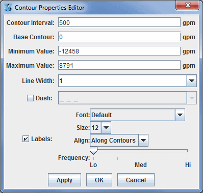

Contour Properties Editor
The Contour Properties Editor is invoked from any contour display control with the Contour: Change button or through the Edit->Change Contours... menu item in the Layer Controls tab of the Data Explorer. Use the items in this window to set contouring properties.

Image 1: Contour Properties Editor
Properties
- Contour Interval - Sets the spacing (difference in value) between contours. There are four ways to specify the contour interval.
- 1. Specify a single value to denote a regular interval between contours.
- 2. Specify irregular contour intervals with a semi-colon separated list of values. For example:
- 5400;5460;5800. This would only show contours at 5400, 5460, and 5800.
- 3. Specify different contour intervals for different ranges in the following format:
- cint1/min1/max1;cint2/min2/max2;...;cintn/minn/maxn
- For example, with geopotential heights: 30/0/4200;60/4200/8600;120/8600/24000
would draw contours at 30gpm between 0 and 4200, 60gpm between 4200 and 8600, and 120gpm between 8600 and 24000
- 4. Specify one individual contour by setting the interval, min, and max as the same value. For example:
- 5400/5400/5400. This would only show the 5400 line.
- Base Contour - Sets the value on which all contours are based. All contours will be integer multiples of the contour interval from the base value. For example, with a base value of 0 and a contour interval of 3 contours would be created at ..-6, -3, 0, 3, 6... A base of 1 with that interval would create contours at ..-5, -2, 1, 4, 7... The base value does not have to be the lowest contour level on a plot, or inside the range of values plotted; it is only a computational reference point. The base contour value is also used for controlling which lines are dashed.
- Minimum Value - Sets the limit below which no contour lines are drawn. The minimum value may be larger than the base value, so that the base value may never appear on a plot.
- Maximum Value - Sets the upper limit above which no contour lines are drawn. The minimum and maximum values do not need to match contour line values; they are only limits.
- Line Width - Sets the line width (in pixels) of the contour lines and labels.
- Dash - Dashes contour values less than the base value. If the base is set higher than maximum value, then all lines are dashed. Use the pulldown menu to select the dash pattern to use.
- Labels - Displays contour labels on the image.
- Font - Sets the font style of the contour labels.
- Size - Sets the font size of the contour labels.
- Align - Sets the way contour labels will be written on the contours. Along Contours means the labels will be written along contours, and while they will not be written upside down, there is a chance they will be written at an angle depending on the layout of the contours. Horizontal means the contour labels will be written on the contour, but it will be written in the horizontal and not on an angle.
- Frequency - Sets the frequency of labels along the contour lines. There will be more labels displayed as the slider is moved from left to right.
- Label Every Nth Line - Determines how many contour lines will be labeled in the display. By default this is set to a value of 2, which means that every other contour line will be labeled. Decrease this value to increase the number of contours with labels, and increase this number to decrease the number of contours with labels.